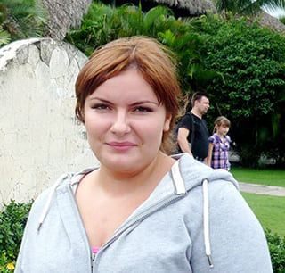
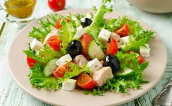

Ketogén diéta, korlátozások nélkül. Lehetséges lenne?
Divat
5 HOZZÁSZÓLÁS
MEGOSZTÁS
5
Népszerű trend, vagy hatékony technika? Pontosan mi is az a ketogén diéta?
A félelmet nem ismerő szerkesztőnk, Nagy Flóra kicsit közelebbről is megismerkedett a
ketogén diétával, felvázolta a mellette és ellene felsorakozó érveket és rájött, hogyan
tehető még inkább hasznossá a fogyókúrás módszer.
Cél: 2 hónap alatti fogyás
Eredmény: - 17 kg, ödéma és növési csíkok nélkül


Úgy döntöttem, két legyet ütök egy csapásra: nyár előtt lefogyok, és írok egy
fantasztikus cikket.
Pontosan mi is az a ketogén diéta?
A ketogén diéta egy alacsony szénhidráttartalmú fogyókúrás módszer, amely többnyire
zsírok és fehérjék fogyasztásából áll.
Leegyszerűsítve, a diéta közben nem ehetsz kedvenc ételeidből! Semmi
édesség, tésztafélék vagy krumplis ételek. A gyorskaja az első számú ellenséged lesz.
Húsból annyit eszel, amennyit csak akarsz, de ezt már a harmadik napon meg fogod unni.
A szénhidrátok biztosítják a szervezetünk működéséhez szükséges energiát.
Szénhidrátok hiányában, a test a lerakódott zsírok elégetésével állít elő magának
energiát. Ezt a folyamatot ketózisnak hívjuk. A fogyás során, a
proteinszövetek sértetlenek maradnak, ezért izmainkat sem veszítjük el. Miket
tapasztaltam?
Abbahagytam az édességek és fánkok zabálását.
A diétámban egyedül hús, sajt, túró, zöldségfélék és tojás szerepelt.
Egyre jobban kezdtem kinézni, de már a 3. nap alatt megtapasztaltam a szénhidráthiány
kellemetlen tüneteit.
A reggeli ébredések borzalmasak voltak, semmi energiám nem volt. Esküszöm, még az agyam
is sokkal lassabban működött.

Egy hét alatt, 4 kg-ot sikerült leadnom, viszont vesepanaszaim lettek… A vesém
egyszerűen képtelen volt feldolgozni a szénhidrátokat helyettesítő hatalmas
mennyiségű fehérjét. Nagyon féltem, ezért úgy döntöttem, leállok az egésszel.
Terveim szerint, a következő hónapban hozták volna le a cikkem, de megbuktam a
kísérleten. A helyzet megoldására, felhívtam egy táplálkozási szakértő barátom, aki
azt mondta, tud egy terméket, amely tökéletes a szénhidrátok helyettesítésére.
A egy L-glutamint és aminovajsavat tartalmazó hatékony
pezsgőtabletta.
Az említett összetevők segítenek alkalmazkodni a belső szerveknek a diéta
miatt kialakuló helyzethez, valamint javítják az agyi tevékenységeket a ketózis
alatt. A vitaminok és ásványi anyagok fokozzák az állóképességünk és
csökkentik a fáradtságot. A legfontosabb, hogy a
használata mellett, bátran fogyaszthatunk szénhidrátokat.
Azt ehetünk, amit csak akarunk, és közben fogyhatunk!
Persze, csak mérsékelt mennyiségben együnk.


Büszkén mondhatom, hogy a kísérletem sikerrel járt. Miután lefogytam, ki kellett
cserélnem az egész ruhatáram. Ma már csak tapulós ruhákba, rövid nadrágba és
miniszoknyába járok. Az alakom miatt, megtehetem. A nyár óta, még inkább vékony lettem.
Üzenném a ketogén diétát kipróbálni vagy kiegészíteni vágyó embereknek:
vásároljátok meg a
t! A termék mellett, sokkal kiugróbb eredményeket érhettek el,
ráadásul még egészségesebbek is lesztek. Persze, nem érdemes túlzásba esnünk, hiszen a
túlzott zsírégetés akár anorexiához is vezethet. Sok sikert mindenkinek! Remélem,
mindannyian eléritek álmaitok alakját!
Hozzászólások:
Mária
Körülbelül 2 napig sikerült betartanom a ketogén diétát. Alig tudtam szénhidrátok
nélkül élni… Az edzés szóba sem jöhetett! Ez a fogyókúra nem nekem való…
válasz

Barbara
A igazán nagyszerű, a segítségével 2 hét alatt, 11 kg-ot
fogytam!
Semmit nem tagadtam meg magamtól, de csak kevés tésztafélét ettem. A súlyom azóta is
változatlan.

válasz

Diána
Már hallottam a ketogén diétáról, de még sosem próbáltam. Tudom, hogy néhány
hollywoodi híresség is ezzel fogyott le. Az a valóságshowból ismert csaj is ezzel
szabadult meg a feleslegétől, nem?! Lehet, hogy ők is a
val
egészítették ki a diétájukat.
válasz

Zita
Nekem is a
val sikerült lefogynom a szülés után. Először, simán a ketogén
diétával próbálkoztam, de nem jártam sikerrel. Borzasztó fáradt voltam és nem tudtam
rendesen gondját viselni a babámnak. A
kipróbálása után, sokkal több energiám lett. Az édességekről való leszokás sem
tartott sokáig. 14 kg-ot sikerült leadnom. Ne várjatok tovább!

válasz
LEGUTÓBBI BEJEGYZÉSEK

A 10 legjobb diétás módszer a gyors fogyáshoz
Egy irigylésre méltó élet - 6 nap a Csillogó sikerek magazin szerzőjével (és
személyi asszisztensével)

Horoszkóp a január 28. és február 3. között született sikeres nőknek
A fogyási történetem. Egy biztonságos és rendkívül hatékony módszer
Népszerű tagek
tanács
ötletek
inspiráció
modern
motiváció
tippek és trükkök
oktatóanyagok
séta
@